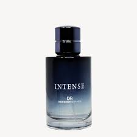

Jean Paul Gaultier Le Beau
Le Beau de Jean Paul Gaultier est un parfum Boisé Aromatique pour homme. Le Beau a été lancé en 2019. Le Beau a été créé par Quentin Bisch et Sonia Constant. La note de tête est Bergamote; la note de coeur est Noix de Coco; la note de fond est Fève de tonka.
|
Jean Paul Gaultier Belle
La Belle est un parfum Floral Oriental pour femme. La Belle a été lancée en 2019. La Belle a été créée par Sonia Constant. La note de tête est Pomme; la note de coeur est Vanille; la note de fond est Patchouli.
|
Coco Mademoiselle
Coco Mademoiselle de Chanel est un parfum Oriental Floral pour femme. Coco Mademoiselle a été lancé en 2001. La note de tête est Orange; la note de coeur est Rose; la note de fond est Patchouli.
|
Interdit
Interdit est un parfum Floral Oriental pour femme. Interdit a été lancé en 1957. La note de tête est Gardénia; la note de coeur est Rose; la note de fond est Vanille.
|

J'adore
J'adore de Dior est un parfum Floral pour femme. J'adore a été lancé en 1999. La note de tête est Mandarine; la note de coeur est Jasmin; la note de fond est Bois de Rose.
|
Libre
Libre est un parfum Floral Oriental pour femme. Libre a été lancé en 2019. La note de tête est Lavande; la note de coeur est Fleur d'Oranger; la note de fond est Vanille.
|
.jpg)
YSL
YSL est un parfum Oriental pour homme. YSL a été lancé en 2009. La note de tête est Citron; la note de coeur est Gingembre; la note de fond est Cèdre.
|
Eros
Eros de Versace est un parfum Oriental Boisé pour homme. Eros a été lancé en 2012. La note de tête est Menthe; la note de coeur est Vanille; la note de fond est Cèdre.
|

Intense
Intense est un parfum Oriental pour homme. Intense a été lancé en 2017. La note de tête est Bergamote; la note de coeur est Ambre; la note de fond est Patchouli.
|